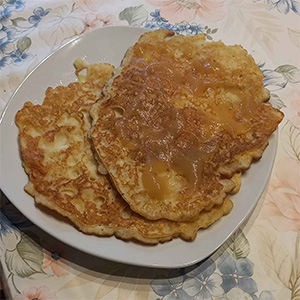
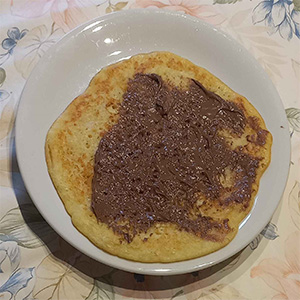

Paul Karrmann :: Denis Kozon :: Christian Lässig
Zuerst müssen Sie Ihren Herd vorheizen.
Für den Teig, geben Sie alle Zutaten in eine Schüssel und rühren sie diese mit einem Schneebesen oder einem Handrührgerät.
Wenn der Teig genug gerührt wurde, sollte dieser nicht zu flüßig sein.
Wenn der Herd warm genug ist können Sie (vor jedem Pfannkuchen) nun einen Teelöffel Öl in die Pfanne kippen.
Als nächstes gießen Sie ein wenig Teig in Die Pfanne.
Tipp: Versuchen Sie den Teig in einer Kreis bewegung einzuschütten oder die Pfanne in einer Kreisbewegung zu drehen,damit sich der Teig gut verteilt.
Sobald der Pfannkuchen auf einer Seite goldbraun wird dann können Sie Ihn wenden.
Nun sind Ihre Pfannkuchen fertig. Sie können sie mit verschiedenen Beilagen essen z.B. Schokosauce, Erdbeeren oder wenn Sie sich Feinde machen wollen dann mit Ketchup.
Pfannkuchen mit Apfelmuß:

Pfannkuchen mit Nutella:
